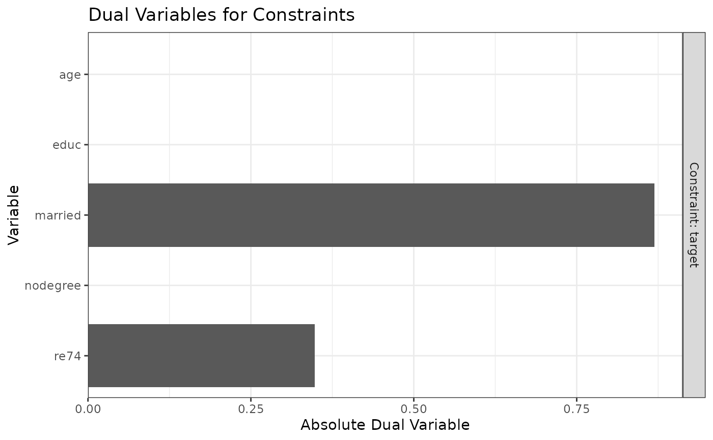

Plot Dual Variables for Assessing Balance Constraints
plot.optweight.RdPlots the dual variables resulting from optweight in a way similar to figure 2 of Zubizarreta (2015), which explained how to interpret these values. These represent the cost of changing the constraint on the variance of the resulting weights. For covariates with large values of the dual variable, tightening the constraint will increase the variability of the weights, and loosening the constraint will decrease the variability of the weights, both to a greater extent than would doing the same for covariate with small values of the dual variable.
Arguments
- x
An
optweightoroptweight.svyobject; the output of a call tooptweightoroptweight.svy.- which.time
For longitudinal treatments, which time period to display. Only one may be displayed at a time.
- ...
Ignored.
References
Zubizarreta, J. R. (2015). Stable Weights that Balance Covariates for Estimation With Incomplete Outcome Data. Journal of the American Statistical Association, 110(511), 910–922. doi:10.1080/01621459.2015.1023805
See also
optweight or optweight.svy to estimate the weights and the dual variables
plot.summary.optweight for plots of the distribution of weights
Examples
library("cobalt")
data("lalonde", package = "cobalt")
#Balancing covariates between treatment groups (binary)
ow1 <- optweight(treat ~ age + educ + married +
nodegree + re74, data = lalonde,
tols = c(.1, .1, .1, .1, .1),
estimand = "ATT")
summary(ow1) # Note the coefficient of variation
#> Summary of weights:
#>
#> - Weight ranges:
#> Min Max
#> treated 1 || 1.0000
#> control 0 |---------------------------| 1.5946
#>
#> - Units with 5 greatest weights by group:
#>
#> 2 3 4 5 6
#> treated 1 1 1 1 1
#> 601 597 595 415 580
#> control 1.5946 1.5946 1.5946 1.5946 1.5946
#>
#> Coef of Var Mean Abs Dev
#> treated 0.0000 0.0000
#> control 0.5319 0.4619
#> overall 0.4446 0.3227
#>
#> - Effective Sample Sizes:
#> Control Treated
#> Unweighted 429.000 185
#> Weighted 334.408 185
# and effective sample size (ESS)
plot(ow1) # age has a low value, married is high

ow2 <- optweight(treat ~ age + educ + married +
nodegree + re74, data = lalonde,
tols = c(0, .1, .1, .1, .1),
estimand = "ATT")
summary(ow2) # Notice that tightening the constraint
#> Summary of weights:
#>
#> - Weight ranges:
#> Min Max
#> treated 1 || 1.0000
#> control 0 |---------------------------| 1.7539
#>
#> - Units with 5 greatest weights by group:
#>
#> 2 3 4 5 6
#> treated 1 1 1 1 1
#> 604 589 597 580 572
#> control 1.7343 1.7441 1.7441 1.7539 1.7539
#>
#> Coef of Var Mean Abs Dev
#> treated 0.0000 0.0000
#> control 0.5338 0.4649
#> overall 0.4462 0.3248
#>
#> - Effective Sample Sizes:
#> Control Treated
#> Unweighted 429.000 185
#> Weighted 333.863 185
# on age had a negligible effect on the
# variability of the weights and ESS
ow3 <- optweight(treat ~ age + educ + married +
nodegree + re74, data = lalonde,
tols = c(.1, .1, 0, .1, .1),
estimand = "ATT")
summary(ow3) # In contrast, tightening the constraint
#> Summary of weights:
#>
#> - Weight ranges:
#> Min Max
#> treated 1 || 1.0000
#> control 0 |---------------------------| 1.8712
#>
#> - Units with 5 greatest weights by group:
#>
#> 1 2 3 4 5
#> treated 1 1 1 1 1
#> 604 589 597 580 572
#> control 1.857 1.8641 1.8641 1.8712 1.8712
#>
#> Coef of Var Mean Abs Dev
#> treated 0.0000 0.0000
#> control 0.6763 0.6473
#> overall 0.5653 0.4522
#>
#> - Effective Sample Sizes:
#> Control Treated
#> Unweighted 429.000 185
#> Weighted 294.354 185
# on married had a large effect on the
# variability of the weights, shrinking
# the ESS